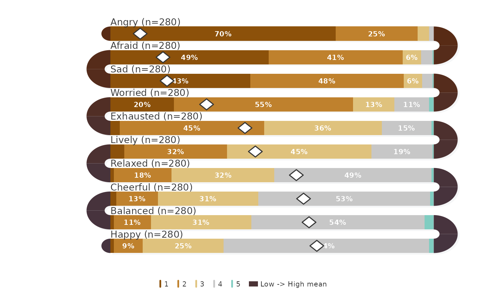

A named list of 10 color palettes for snake plots. Each palette contains
7 anchor colors that can be interpolated to any length with
snake_palette.
Details
- classic
Diverging red-to-blue. Clean Likert default.
- earth
Diverging brown-to-teal. Natural, understated.
- ocean
Diverging coral-to-navy. Warm/cool contrast.
- sunset
Diverging orange-to-indigo. Vivid but balanced.
- berry
Diverging rose-to-green. High contrast.
- blues
Sequential light-to-dark blue.
- greens
Sequential light-to-dark green.
- grays
Sequential light-to-dark gray.
- warm
Sequential cream-to-dark red.
- viridis
Sequential yellow-green-blue-purple (viridis-inspired).
Examples
snake_palettes$ocean
#> [1] "#D73027" "#F46D43" "#FDAE61" "#E0E0E0" "#ABD9E9" "#74ADD1" "#4575B4"
survey_snake(ema_emotions, colors = snake_palettes$earth,
tick_shape = "bar", sort_by = "mean")
